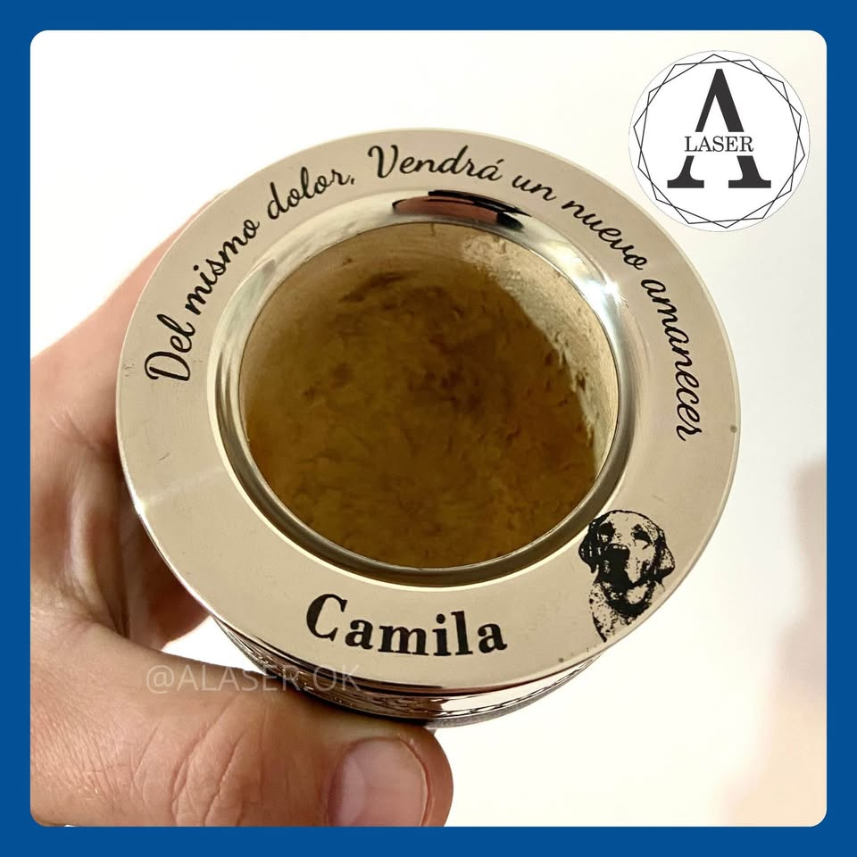
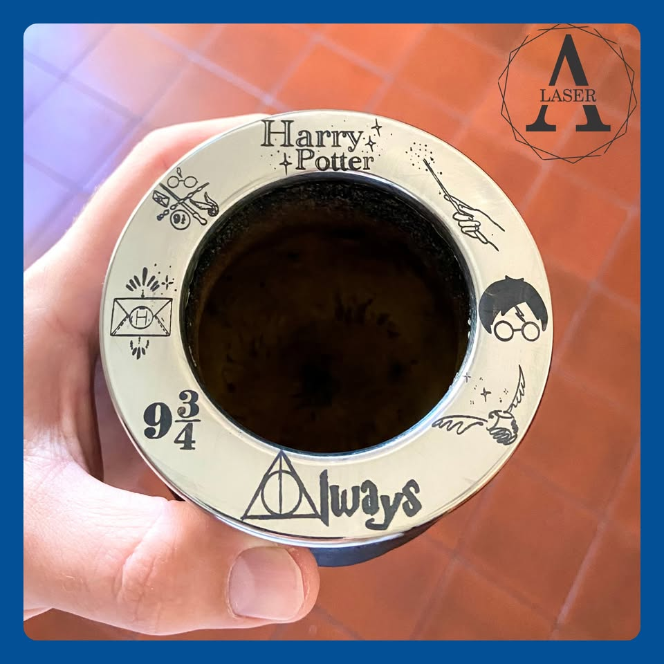
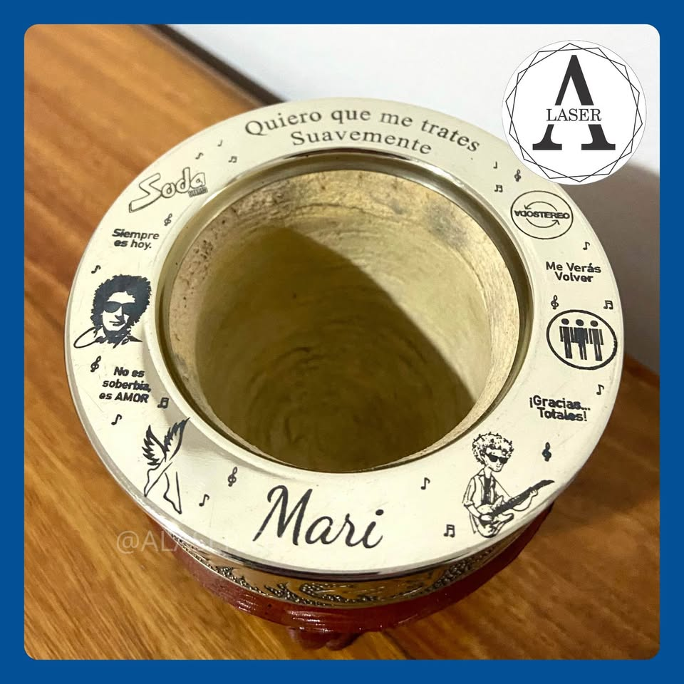
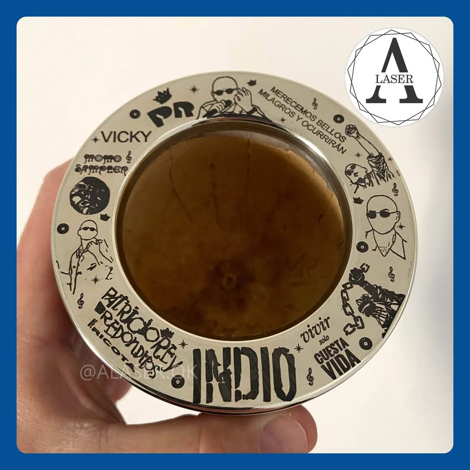

Mates personalizados con Grabado Láser.




Primero, elegís el modelo que más te guste y realizás tu pedido. Una vez confirmado el pago, nos ponemos en contacto para definir el diseño: puede ser un nombre, una frase especial o una imagen significativa. Te mostramos una vista previa para que veas cómo quedará antes de grabarlo. Cuando el diseño está aprobado, realizamos el grabado con tecnología láser de alta precisión, logrando un acabado prolijo, duradero y totalmente personalizado. Finalmente, coordinamos la entrega para que recibas tu mate único, listo para disfrutar o regalar.